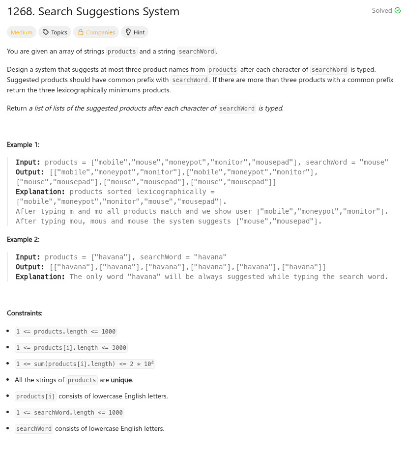

參考資訊：
https://www.cnblogs.com/grandyang/p/15679711.html
題目：

int mysort(const void* a, const void* b)
{
return strcmp(*(char**)a, *(char**)b);
}
/**
* Return an array of arrays of size *returnSize.
* The sizes of the arrays are returned as *returnColumnSizes array.
* Note: Both returned array and *columnSizes array must be malloced, assume caller calls free().
*/
char*** suggestedProducts(char** products, int productsSize, char* searchWord, int* returnSize, int** returnColumnSizes)
{
int i = 0;
int j = 0;
int len = strlen(searchWord);
char ***r = NULL;
qsort(products, productsSize, sizeof(char**), mysort);
(*returnSize) = 0;
*returnColumnSizes = malloc(sizeof(int) * len);
r = malloc(sizeof(char**) * len);
for (i = 0; i < len; i++) {
r[i] = malloc(sizeof(char*) * 3);
for (j = 0; j < 3; j++) {
r[i][j] = malloc(sizeof(char) * 3000);
r[i][j][0] = 0;
}
int cnt = 0;
for (j = 0; j < productsSize; j++) {
if (strlen(products[j]) < (i + 1)) {
continue;
}
if (!memcmp(products[j], searchWord, i + 1)) {
strcpy(r[i][cnt], products[j]);
cnt += 1;
if (cnt >= 3) {
break;
}
}
}
(*returnSize) += 1;
(*returnColumnSizes)[i] = cnt;
}
return r;
}